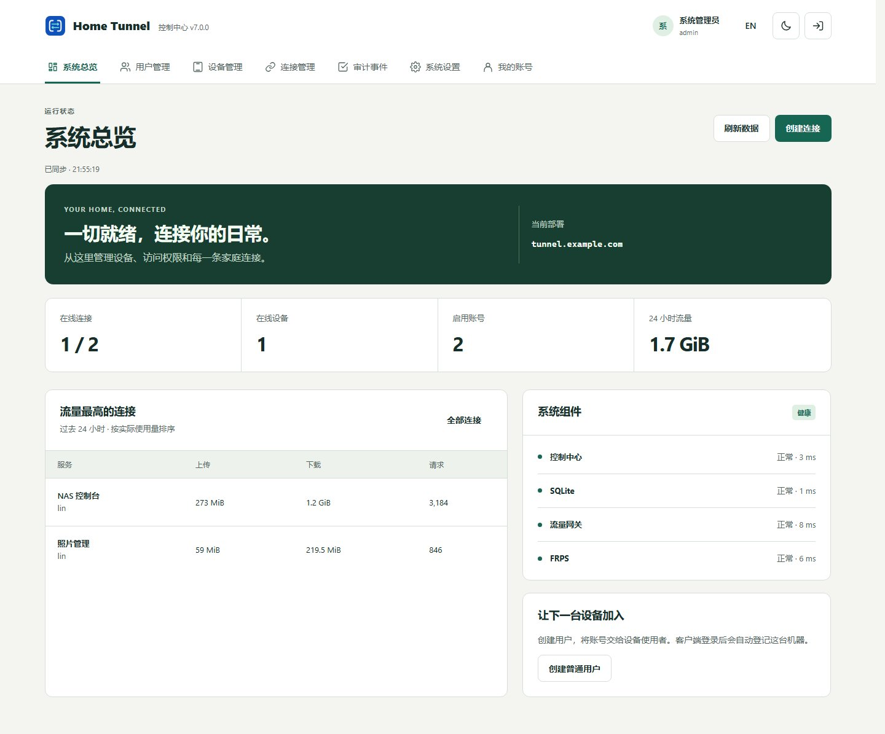

Scope
9.0.0 is stable. 10.0.0 is still in development.
A version number does not mean every remote-control feature has been accepted. Secure desktop, audio, file transfer, and stable downloads for 10.0.0 have no acceptance result. The published contract remains api-v1.3.0. api-v1.4.0 is not frozen.
Two paths
| Path | Published 9.0.0 behavior | 10.0.0 plan |
|---|---|---|
| Remote control | Local approval, a fixed password, or a one-time password on the same server. A device code is not an enrollment code. Payloads use direct UDP only. | UDP-only remains. Unattended access, secure desktop, audio, and bidirectional files are not accepted. |
| FRP publishing | HTTP/HTTPS, TCP, and UDP through a home Agent and FRP 0.70.1. | A wizard and NAS, Home Assistant, Immich, Jellyfin, SSH, RDP, and RTSP templates are not accepted. |
9.0.0 limits that still apply
- Windows pre-login, lock-screen, and UAC secure-desktop control are not done.
- Audio, macOS/Wayland hosting, and AV1/HEVC are not delivered.
- Clipboard interoperability, arm64 APK runtime, cross-network use, full upgrade recovery, and long-running sessions are not accepted.
- Linux x64 X11 evidence comes from an isolated environment, not a physical desktop.
- The 8.0 acceptance record is historical. It does not verify 9.0 or 10.0 bytes.
Waiting for an actual product screenshot
Waiting for an actual product screenshot
